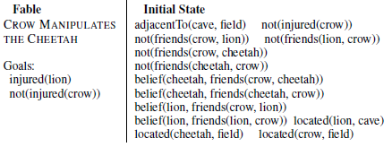
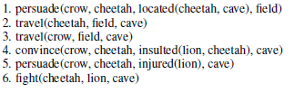

Making social AI
https://arxiv.org/pdf/1910.03230.pdfFor implementing social agents, we believe it is better fix ther foundations of behaviors instead of gaining percent points on the billion-parameter language model of the week. For tha ,a and Implement initially a basic language with interrogatives, conditionals, imperatives, causality, actors, imaginary sequences of events. Later will impleent social / moral concepts on that basis.
Grounding on a environment (
generative networks for past/future/capabilities/event/etc-generation past,future,capabilities networks trained at time-steps
concept nodes where probabilistic sqeuentes generate more abstract concepts.
multi-step pondering ( vqa) user input
supervised learning users code expected reaction to events
reinforcement learning: self-play (alphazero, deal or no-deal)
users evaluate actions
time processing ?
theory of mind (bayesian) - trains with
user input
Implement "infant-like knowledge representations" (vs waiting the Gradient descent to work)
Finally, we recognize that some researchers still hold out hope that if only they can just get big enough training datasets, sufficiently rich tasks, and enough computing power -- far beyond what has been tried out so far -- then deep learning methods might be sufficient to learn representations equivalent to what evolution and learning provides humans with. We can sympathize with that hope and believe it deserves further exploration, although we are not sure it is a realistic one. We understand in principle how evolution could build a brain with the cognitive ingredients we discuss here. Stochastic hill-climbing is slow -- it may require massively parallel exploration, over millions of years with innumerable dead-ends -- but it can build complex structures with complex functions if we are willing to wait long enough. In contrast, trying to build these representations from scratch using backpropagation, deep Q-learning or any stochastic gradient-descent weight update rule in a fixed network architecture may be unfeasible regardless of how much training data are available. To build these representations from scratch might require exploring fundamental structural variations in the network's architecture, which gradient-based learning in weight space is not prepared to do. Although deep learning researchers do explore many such architectural variations, and have been devising increasingly clever and powerful ones recently, it is the researchers who are driving and directing this process. Exploration and creative innovation in the space of network architectures have not yet been made algorithmic. Perhaps they could, using genetic programming methods or other structure-search algorithms . We think this would be a fascinating and promising direction to explore, but we may have to acquire more patience than machine learning researchers typically express with their algorithms: the dynamics of structure-search may look much more like the slow random hill-climbing of evolution than the smooth, methodical progress of stochastic gradient-descent. An alternative strategy is to build in appropriate infant-like knowledge representations and core ingredients as the starting point for our learning-based AI systems, or to build learning systems with strong inductive biases that guide them in this direction. Building Machines That Learn and Think Like People
Why we may need to hand-hold the agents?
This raises the question of how humans might learn even more abstract tasks,and Bengio (2013b) studies the hypothesis that the use of language and the evolution of culture could have helped humans reduce that difficulty(...) The basic idea is that humans (and current learning algorithms) are limited to “local descent” optimization methods, that make small changes in the parameter values with the effect of reducing the expected loss in average. This is clearly prone to the presence of local minima, while a more global search (in the spirit of both genetic and cultural evolu tion) could potentially reduce this difficulty. One hypothesis is that more abstract learning tasks involve more challenging optimization difficulties, which would make such global optimization algorithms necessary if we want computers to learn such abstractions from scratch. Another option, following the idea of curriculum learning (Bengio et al., 2009), is to provide guidance ourselves to learning machines (as exemplified in the toy example of Gulcehre and Bengio (2013)), by “teaching them” gradually more complex concepts to help them understand the world around us (keeping in mind that we also have to do that for humans and that it takes 20 years to complete). Evolving Culture vs Local Minima, Y Bengio
Try it
More info about the present status
The present code iteration used hard-coded naive heuristics of language use. The interactions use a json-like expression instead of a natural language.
The agents self-played for some time so they could learn models of the enviromnent, themselves and other agents. And also what to speak to influence each other. The results were inconclusive. Teams with access to thousands of Petaflop/s-days can try to do better.
Now is the hard work of implementing reasoning skills and teaching lessons whenever gradient descent is too slow.
Other stuff
Original Squares Project
Socially believable agents are important milestones for, among other things:
- Personal assistants,responsible chatbots
- Healthcare Robots
-
Videogame Non-Player Characters (NPCs)
A deeper system would provide a world filled with dynamic Machiavellian Plotters.(..)
If NPCs possessed social reasoning, then open-ended action games can be about power dyanmics. They may support strategies in which the player forges and betrays lasting relationships with NPCs instead of just shooting. Think of an interactive version of the Wire, House of cards or the Sopranos. These TV shows are about weaving and unweaving of complex interpersonal relationships as a means to na end. NPCs with innocuous beginnings could become regular companions, or grow into mortal enemies.(…)
One possible future for the open world game may be na experience that combnins the Sims, which features lifelong ambition arcs, with something like PromWeek,the fascinating project that simulate social interactions between students.
Video games where people matter? The strange future of emotional AI - research on (Evolutionary) Psychology
- consciousness,qualia and the Value Alignment problem (More details)
Environment and Evolutionary Psychology
The environment used to explore the human psychology and how it evolved
Our environment will lead to interpersonal competiiton as a driver for interesting phenomena . The amount of food is limited and thea gents have to compete for mates, feed theis children and relate to peers and kin They can forage food, give or hit (remove) energy to/from other agents, and mate leading to offsring. Agents may have inheritable fitness AttMate and psychological characteristics.
While we could evolve these algorithmes, to lessen computational costs the instints drives(feed, mate, help kin and offspring, make friends etc), and emotions(happiness, sadness, fear, anger, surprise etc) will be to some extent hardcoded.
The default environment is a bare-bones representation of aspects from the environment where our ancestors lived and where our behavior evolved: small groups, foraging, sharing food. In principle we would not implement matarial obejcts;
More concretely, it is a hypothetical land with enough food to support some 200 agents. Each agent has a gender, age and level of energy, that inreases by eating and decreases with age and sickness. If the energy reaches 0 the agent dies.

At each step the agents can take 4 kinds of actions:
- talk in private to a group of its choosing
- give energy/food/money from others (or hit to remove energy)
- mate
- forage food
There is a probability that private actions of other agents will be discovered by an random agent, leading eventually to gossip.
The human goal-system, which includes survival, social status, and morality, along with many others, is a mix of adaptations to conditions in the human ancestral environment
BUT
Even though the human mind evolved to serve evolutionary goals of reproductive success, humans do not share the goals of the evolutionary processes which created them (Tooby and Cosmides 1992; J. D. Greene 2002).
Conflicts
The agents need to cooperate to forage the food and decide how to share it. As the food is limited, competition arises between them. They should decide how to allocate it between kin, mates and friends, and avoid or win conflicts.
About coalitions:
Every human bears the whole stamp of the human condition. This includes evolved neural programs specialized for navigating the world of coalitions—teams, not groups. These programs enable us and induce us to form, maintain, join, support, recognize, defend, defect from, factionalize, exploit, resist, subordinate, distrust, dislike, oppose, and attack coalitions. John Tooby
The use of a large population > 100, allows to explore the psychology of coalition-forming.
They reproduce sexually, transmiting genes that control their behavior ( or use the number of grandchildren as a proxy to fitness to calculate gradientes for updating a neural network). So acquiring mates, childcare and building relationhips become crucial.
More stuff:The agents' training
Architecture
Define a basic language and inplement childlike representation structures:
We intend to imbue them with:
If LAS (a language learning model) were built like Winograd’s (1972) program to converse with another speaker instead of receiving sentences passively, it would have representational structures that conceivably could be useful in acquiring rules for interrogatives, conditionals, imperatives, and so on. And if it had a more childlike semantic representational system, which categorized the world into actors, actions, and recipients of actions, possessors and possessed, objects and locations, and so on, its linguistic abilities might even resemble those of young children - Steven Pinker
hard-coded utility/ drives from evolutionary psychology (how the mind works)
TODO: evolve them later
generative networks for past/future/capabilities/event/etc-generation past,future,capabilities networks trained at time-steps
- multi-step pondering ( vqa) user input
- supervised learning users code expected reaction to events
- reinforcement learning:
self-play (alphazero, deal or no-deal)
users evaluate actions - time processing ?
- theory of mind (bayesian)
- trains with
user input
Concept nodes
Create nodes representing concepts: basic words, on node for each agent, numbers, events, etc
INITIAL LANGUAGE:
| agent names | |
|---|---|
| basic verbs | move give speak |
| logic | IF AND OR NOT YES TRUE because |
| Theory of mind | want believe |
| time | -ed will before after WHILE soon later _times |
| causality/action | if because try can should |
| interrogatives, conditionals, imperatives |
didn't work ? shoehorn skills until it works --- colaboration needed
MORE LANGUAGE
other basic words
pronouns: I you every/some/no-body
kin: father dagther mother son aunt uncle niece nephew cousin
wh - when what who where why which whom whither how how-much
probability: rarely seldom sometimes often always
quantitatives: no few some many ALL every almost positive negative zero one two three
comparison: same different like big small
LANGUAGE
join separate oppose friend enemy revenge betray ask answer order obey forbid allow call promise swear bless curse err forget teach learn
MORALS:
just free caring holy loyal respect "accidents, agency, agreement, alternatives, apologies, arbitration, attempts, bias, blame, coercion, commensuration, conflict, constraints, conventions, costs, crimes, culpability, culture, debt, deception, decisions, dependence, deterrents, distractions, domination, duress, duty, escalation, excuses, exoneration, failures, fairness, false beliefs, forgiveness, freedom, goals, goodness, identity, ignorance, impairment, impartiality, innocence, intervention, justifications, mental models,mercy, mistakes, moral rules, norms, paragons, passion, persons, plans, preferences, prohibitions, punishment, recklessness, reparations, reputation, retaliation, shame, side-effects, strategies, temptation, tort, trust, universals, utility, values, vengeance, virtues, and will"
Parsing language
Initially the language will be a lisp-like tree structure like (believe I (give A B +5 t+2)) means "I believe that A will give +5 energy to B in the time now+2". Implementing proper natural language is a probable next step
WM
todo
episodic memory :
A (fixed) quantity of nodes are reserved for this (so over time thre may be overwriting of less used memories). Each memory node links to agent, time, action of the event, etc.
semantic memory:
todo
Theory of mind: (words lke: believe, want, know)
bayesian inducton from events, speech to the mind states of other agents , and from mind states to possible actions. during the training a unsupervised network trains (telepathy) using triples of belief, desire action for itself and other agents. During testing this network is used to induce the mind states of other agents from evidence. On LimitToM, LimitToM2 indicates that no more than 2 levels of ToM may be optimal. (Battle of Wits scene from The Princess Bride) BDI (un)supervised network – given beliefs, desires and/or actions of other agents and self it gives a probable sate of mind/ action for the agent. It learns from training where the data is accessible (simulating “reading” events from a novel), and from thinking process (simulating other agent) that the agent may do.
Consistency
The network tries to have a single unified view of the world and solve inconsistencies. Inconsist
Probability
The networks give a probability for a outcome or inference, that may be projected on the magnitude nodes
Logic
logic conectives (and, or , not) -Probably will be bsaed on hard-coded/ learnt rules of reasoning:
Ex: A AND B hit c => A HIT C / B HIT C
Negation - > TODO ?
Chunk
chunk /unchunk items linked by a logic connector:
Mary and Sue -> chunk1
For example: A thinks that B thinks that C thinks of D – it is easier to chunk this as (avoiding repetition of concept and using a shallower embedding) LimDecision
Play, exploration , curiosity
Uncertain states activate a curiosity instinct to ask , experiment or play. It is useful if the agents explore. This may be implemented by RL-like exploration or even as a kind of playful / curiosity instinct IntMot
[ImaginDLR] Imagination-Augmented Agents for Deep Reinforcement Learning
Multiagent Logic
Adopt the framework of multiagentLogic programming LogicProg1, LogicProg2, for negotriation and smooth it to use neutral netrorks.
TASK EXECUTION:
The network uses cycles of pondering to plan and make inferences about the social world: ( MAC , WorkMem ) builds a neural-controlled neural state machine to parse an inage
Performance Monitoring
Contorlling performance in tasks to decide if need more attention PerfMon
Shared Networks
Each agent has an individual episodic memory. There are a prediction network and a Task Network which are shared between agents, so as to speed learning:
Prediction network (world model) P (s1 | s) probability future / generative network (generate futures) P(s | O) given observation, what is the most probable state U(s) state value
Task network - (Procedural memory) - Π(s) Actual actions and cognitive actions What to save to/retrieve from memory, to (unbchunk) Who to model (theory of mind), what to say Change beliefs Abstract concepts: H2 + O2 -> H2O
Groups/ coalitions
The internal representation of (other) agents may also be groups/coaliitons with unique beliefs/ goals.
Expertise
Expertise -> Consolidation of laborious streams of thinking onto chunks of automatic processing. This process is used also in other contexts..
magnitude
A list of node from low to high values. Trains a convolutional network to represent quantiiatives ( no, few,m some ,many all), intensity( big, small, very, almost), probability ( sure, often, sometimes, never). Bases its judgement on reference( most common) values. For example a value is “big” if bigger than the reference class. Linear neuron set that doubles as time, space, magnitude intensity indicators Magn1, Magn2 . Counting NumLearn. Learn numerosity neurons from experience LearnQty. Will have operators for approximate number system, adding, compare (more, less). Maybe a module for precise computational operations (non-human)
Distilling rules
Dora2- Predicate learning in neural systems: Discovering latent generative structure
Given the “unconscious”/ subsymbolic learning the agent will store in the netxork, it is important if it can distill it into (approximate) rules, by means of ILP (Inductive Logic Programming) LogRuleInd, LogRuleInd2, , both so the agent can consciously reason about the situations and for user’s insight on the (social) patterns discovered. It is a way to create social theories and tocompare with known patterns in real-wolrd (evolutionary) psychology. Related to that, one could use common-sense rules to simulate the agent’s mental states and their planning to achieve goals by manipulationg the other agent’s mental states LogicTom1, LogicTom3. The drawback of these works is that they use logical rules that are brittle and difficult to be comphreensive, and also do not flexible communication, planning and reasoning . One of the main goals of the present project is to adapt this kind of work to use more flexible neural networks and make the system self-learn intuitive psychology (Theory of Mind) by self-play and crowdsourcing of social interactions.
Value
Nodes represent positive and negatve valuation, to push the agent towards positive outcomes.
Social Planning
in SocialPlan a situation is described a initial state that is logically manipulated using a cognitive cycle (could also be used a planning/ logic theorem prover) to arrive at the solution:
A review of FPS
Like many architectures, FPS contains a working memory and a long-term memory. The primary structure in the former is the problem, which includes a state description and a goal description. Another important structure is an intention or operator instance. A solution to problem P comprises an applied intention I, a subproblem for transforming P’s state into one that meets I’s conditions, a subproblem for transforming the state produced by applying I into one that satisfies P’s goals, and solutions to both subproblems. The base case is a trivial solution in which the state satisfies the goals. Long-term memory contains two forms of content: domain knowledge, which defines predicates, operators, and inference rules for a given problem domain, and strategic knowledge, which is domain independent. Domain content provides the material that planning uses to generate new subproblems, intentions, states, and goals; strategic content determines the details of the problem-solving process.
As in Newell, Shaw, and Simon’s (1958) theory, problem solving in FPS involves transforming an initial state into one which satisfies the goal description by applying operators that manipulate state information. The architecture operates in cognitive cycles that involve five stages, each of which uses structures in long-term memory to update the contents of working memory. These include selecting a problem P on which to focus, selecting an operator instance I relevant to P, generating new subproblems based on I, checking for failure (e.g., loops), and checking for success (e.g., satisfied goals). For our work on social planning, we incorporated strategic knowledge that combines iterative-sampling search, backward chaining, and eager commitment methods. Our pilot studies suggested that goal-driven problem solving is more focused when tasks involve altering other agents’ mental states, although another approach like forward chaining might find the same solutions with additional search.(...)
This reasoning process has more general applicability, but it is especially important in social settings. The inference stage can operate over domain rules, but SFPS also takes advantage of conceptual rules like
not(belief(A, X) < - belief(A, not(X)) and not(belief(A, not(X)) <- belief(A, X) .
Example

The crow doesn’t like the cheetah, that thinks he is his friend. The crow wants the lion to be injured
The social planner runs and find a solution:

The crow persuades the cheetah that the lion in the cave insulted the cheetah and is injured. The cheetah enters the cave and they fight
Bonus - Data's emotion chip:
- happy - broaden , build
- sad - analytical thinking
- etc
Bonus - Play / Humor / Art
Play as curiosity, experimentation – see above. To the agents art (ex, games, competition, storytelling) as a form of expression
Humor- for example using a theory of humor as bening (rule) violation. (EX, the dog enters the church). Or as a means to contest dominance.
Bonus - - Spirituality
immersion with universe
belief in afterlife? spiritual beings?
Hardcode belief in invisible big powerful benevolent agent.
Release
We intend to release the software in a open-source sandbox to generate and edit histories/narratives. The API will probably allow a timeline to go forward, rewind, saved, replayed with different random seed. You may get;set the mind of agents using code or eventually natural language commands. It would also be possible to use the neural world model to generate a narrative instead of simulating directly. For example: "There was 10 people who" and the model completes the story, while the user may also edit.
Actaully applications of this technique will need customization and insertion of domain-specific knowledge and personalities. (Where the uncanny valley will arise if one asks stuff the agents are not prepared to answer - "Do you like ice-cream?" )
The interaction convincing if situated whitihn the boundaries of the agent's world. For an example, asking an agent about the relationship with his friends or what funny situtations it experienced. One may try mathematically or philosophically inclined agents.
How can you help?
- implement these featurs in the agent and in parallel to
- build scenarios that test them,
- advertise this site!